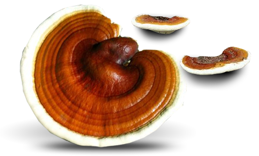

Ganoderma lucidum u istočnjačkoj medicini
Stari Kinezi i Japanci od davnina poznaju jedinstven lek iz prirode - gljivu do koje nisu lako dolazili. Nazivali su je još i gljivom besmrtnosti, nebeskom biljkom, gljivom sreće, a botaničko ime joj je Ganoderma lucidum. Naime, sama gljiva, boreći se sa štetnim agensima, izlučuje veliki broj supstanci koje putem spora dospevaju u njenu neposrednu okolinu. Najvažnije od njih su triterpeni i polisaharidni β-glukani. Brojne studije sprovedene tokom poslednjih deset godina dokazale su antitumorsku, hepatoprotektivnu, antihipertenzivnu, antihistaminsku i antivirusnu aktivnost ovih jedinjenja.
Immuno G+ - prateći japansku tehnologiju
Danas u svetu postoji mnogo preparata dobijenih iz gljive Ganoderma lucidum kojima se pripisuju farmakološka svojstva, ali proizvođač, Natura Pharma iz Slovenije, je nosilac licence za proizvodnju preparata Immuno-G+ po patentiranoj japanskoj tehnologiji. Dr Snežana Bašić, radeći kao član naučnog tima, otkriva koliko je tehnologija izrade presudna za bezbednost, kao i optimalni sadržaj aktivnih supstanci.

dr sci med Snežana Bašić u razgovoru sa profesorom Hondom
Za ovaj preparat je dokazano da u svom sastavu sadrži optimalnu koncentraciju aktivnih principa, triterpena i polisaharida, kao i da pokazuje odsustvo toksičnosti za organizam čoveka, što ga izdvaja od ostalih preparata na tržištu, čija efikasnost i bezbednost nije pouzdano dokazana – ističe dr Bašić.
Triterpeni i polisaharidi su najviše ispitani sastojci gljive. Antitumorska aktivnost triterpena i polisaharida objašnjava se njihovom sposobnošću da aktiviraju prirodnu odbranu organizma (na prvom mestu ćelije makrofage, NK ćelije, tj. prirodne “ubica” ćelije i citotoksične T-limfocite) i na taj način podstaknu fagocitozu i eliminaciju tumorskih ćelija. S druge strane, triterpeni zaustavljaju sintezu krvnih sudova neophodnih za ishranu tumorskih ćelija i povećavaju koncentraciju kiseonika u zdravim ćelijama, što smanjuje mogućnost njihove nekontrolisane deobe. Udruženi, ovi efekti znatno usporavaju progresiju bolesti. Kod pacijenata na hemio i zračnoj terapiji zabeleženo je značajno smanjenje neželjenih efekata poput gubitka apetita, opšte slabosti, supresije koštane srži i rizika od infekcija.
Uzgoj ganoderme lucidum u laboratorijskim uslovima
Takođe je dokazana njihova antihipertenzivna i hipoholesterolemična aktivnost, kao i antiagregativni efekat na krvne pločice-trombocite, čime im se daje na značaju kada su u pitanju prevencija i lečenje kardiovaskularnih bolesti. Efekat triterpena se proširuje i na borbu protiv nekih virusa, na prvom mestu Herpes simplex i Hepatitis virusa, zahvaljujući dokazanom mehanizmu sprečavanja adsorpcije virusa na zdravu ćeliju domaćina i njegovog ulaska u nju . Na ovaj način usporava se progresija virusne infekcije.
Izlučevine ganoderme lucidum - lekoviti sastojci
U mnogim studijama obrađivan je uticaj triterpena na nivo histamina u organizmu kod osoba sklonih alergijama i rezultati su pokazali da triterpeni inhibiraju oslobađanje histamina iz njegovih vezikula, što im daje mesto i u tretiranju alergijskih reakcija na različite uzročnike.
Deca i Immuno G+
Stručni tim Farmaceutskog fakulteta u Beogradu je ocenio da je preparat Immuno-G 100 bezbedan za primenu kod dece od najranijih dana, tj. 0-12 godina. Doziranjem 1-2 kapsule dnevno kod dece se postižu odlični rezultati u pripremi organizma za nadolazeću sezonu gripa i prehlada.
Odrasli i Immuno G+
Immuno-G 500 se preporučuje odraslim osobama koje su podvrgnute hemioterapiji i zračenju, koje boluju od kardiovaskularnih bolesti, koje su sklone upalama i alergijama, hronično umornim i osobama koje pate od nesanice, kao i bilo kojoj zdravoj osobi koja želi da održi svoje dobro zdravlje I vitalnost.
Besplatno savetovalište o zdravlju
Dodatne informacije, iskustva sa pacijentima i savete vezane za zdravlje, lekove i dodatke ishrani možete dobiti pozivom besplatnog savetovališta na broj telefona 011/398-77-47.
Na pozive odgovaraju stručnjaci iz oblasti medicine i farmacije.
Savetovalište radi od 9h-17h svakog radnog dana, po principu kol centra i pozivi se ne naplaćuju dodatno.